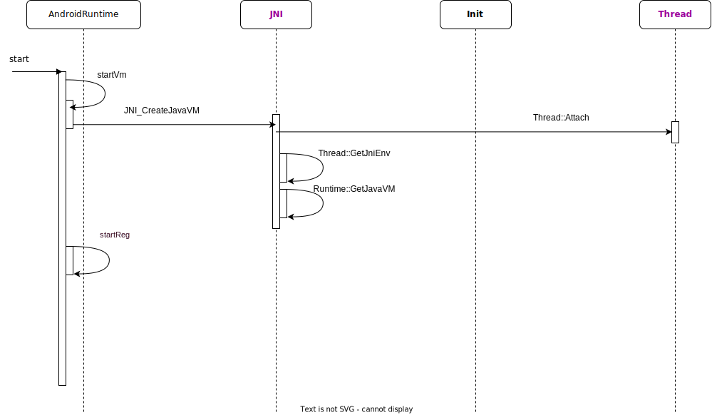

ART流程分析
流程基于 android 11源码 ， 参考 老罗的博客
-
Android进程fork自Zygote进程，本质还是Linux进程
-
ART虚拟机流程可以阅读以下几个类帮助梳理整个jvm框架。
runtime、thread_list、thread、signal_catcher、class_linker、intern_table、java_vm_ext
- JVM对应进程，JNIEev是线程独有
ART虚拟机启动分析
-
创建了虚拟机实例；
-
加载了Java核心类（由zygote）及其JNI方法；
-
为主线程的设置了一个JNI环境；
-
注册了Android核心类的JNI方法。

//init.rc
service zygote /system/bin/app_process -Xzygote /system/bin --zygote --start-system-server
xref: /frameworks/base/cmds/app_process/app_main.cpp
173 int main(int argc, char* const argv[])
185 AppRuntime runtime(argv[0], computeArgBlockSize(argc, argv));
->
34 class AppRuntime : public AndroidRuntime
338 runtime.start("com.android.internal.os.RuntimeInit", args, zygote);
//=============================================================================================
xref: /frameworks/base/core/jni/AndroidRuntime.cpp
1136 void AndroidRuntime::start(const char* className, const Vector<String8>& options, bool zygote)
1193 if (startVm(&mJavaVM, &env, zygote, primary_zygote) != 0) {
1201 if (startReg(env) < 0) { //设置NativeFrameStack大小、注册JNI函数
1239 jmethodID startMeth = env->GetStaticMethodID(startClass, "main",
1240 "([Ljava/lang/String;)V");
1245 env->CallStaticVoidMethod(startClass, startMeth, strArray); //ART虚拟机真正运行
->
609 int AndroidRuntime::startVm(JavaVM** pJavaVM, JNIEnv** pEnv, bool zygote, bool primary_zygote)
1095 if (JNI_CreateJavaVM(pJavaVM, pEnv, &initArgs) < 0) {
//=============================================================================================
xref: /art/runtime/jni/java_vm_ext.cc
1195 extern "C" jint JNI_CreateJavaVM(JavaVM** p_vm, JNIEnv** p_env, void* vm_args) {
1225 *p_env = Thread::Current()->GetJniEnv(); //获取之前已经在Attach流程实例化JniEnv
1226 *p_vm = runtime->GetJavaVM();
- JniEnv创建在JNIEnvExt::Create，主要初始化了native函数表。
xref: /art/runtime/thread.cc
980 Thread* Thread::Attach(const char* thread_name, bool as_daemon, PeerAction peer_action) {
999 bool init_success = self->Init(runtime->GetThreadList(), runtime->GetJavaVM());
->
967 tlsPtr_.jni_env = JNIEnvExt::Create(this, java_vm, &error_msg);
//=============================================================================================
xref: /art/runtime/jni/jni_env_ext.cc
68 JNIEnvExt* JNIEnvExt::Create(Thread* self_in, JavaVMExt* vm_in, std::string* error_msg) {
69 std::unique_ptr<JNIEnvExt> ret(new JNIEnvExt(self_in, vm_in, error_msg));
->
76 JNIEnvExt::JNIEnvExt(Thread* self_in, JavaVMExt* vm_in, std::string* error_msg)
87 functions = GetFunctionTable(check_jni_);
->
323 return check_jni ? GetCheckJniNativeInterface() : GetJniNativeInterface(); //AndroidMainfest.xml中debuggable控制
//=============================================================================================
xref: /art/runtime/jni/jni_internal.cc
2962 const JNINativeInterface* GetJniNativeInterface() {
2963 // The template argument is passed down through the Encode/DecodeArtMethod/Field calls so if
2964 // JniIdType is kPointer the calls will be a simple cast with no branches. This ensures that
2965 // the normal case is still fast.
2966 return Runtime::Current()->GetJniIdType() == JniIdType::kPointer
2967 ? &JniNativeInterfaceFunctions<false>::gJniNativeInterface
2968 : &JniNativeInterfaceFunctions<true>::gJniNativeInterface;
2969 }
- JavaVM创建在JavaVMExt::Create中，主要设置jvm参数、设置aot编译逻辑等，以及attach主线程
xref: /art/runtime/runtime.cc
763 bool Runtime::Create(const RuntimeOptions& raw_options, bool ignore_unrecognized) {
765 return ParseOptions(raw_options, ignore_unrecognized, &runtime_options) &&
766 Create(std::move(runtime_options));
746 bool Runtime::Create(RuntimeArgumentMap&& runtime_options) {
751 instance_ = new Runtime;
752 Locks::SetClientCallback(IsSafeToCallAbort);
753 if (!instance_->Init(std::move(runtime_options))) {
->
1186 bool Runtime::Init(RuntimeArgumentMap&& runtime_options_in) {
937 SetUpAlternateSignalStack();
941 InitCpu();
942 InitTlsEntryPoints();
943 RemoveSuspendTrigger();
944 InitCardTable();
945 InitTid();
... //初始化的代码很长，包括设置jvm参数、aot编译的逻辑等都在这里进行,java_vm_就是实例化的vm对象
1536 java_vm_ = JavaVMExt::Create(this, runtime_options, &error_msg);
1551 Thread* self = Thread::Attach("main", false, nullptr, false); //main线程在这里绑定
ART虚拟机运行分析
xref: /frameworks/base/core/jni/AndroidRuntime.cpp
1136 void AndroidRuntime::start(const char* className, const Vector<String8>& options, bool zygote)
1245 env->CallStaticVoidMethod(startClass, startMeth, strArray);
xref: /art/runtime/jni/check_jni.cc
2311 static void CallStaticVoidMethod(JNIEnv* env, jclass c, jmethodID mid, ...) {
2314 CallMethodV(__FUNCTION__, env, nullptr, c, mid, vargs, Primitive::kPrimVoid, kStatic);
//这里区分不同的调用类型执行
3271 switch (invoke) {
3272 case kVirtual:
3273 result.L = baseEnv(env)->CallObjectMethodV(env, obj, mid, vargs);
3274 break;
3275 case kDirect:
3276 result.L = baseEnv(env)->CallNonvirtualObjectMethodV(env, obj, c, mid, vargs);
3277 break;
3278 case kStatic:
3279 result.L = baseEnv(env)->CallStaticObjectMethodV(env, c, mid, vargs);
3280 break;
3281 default:
3282 LOG(FATAL) << "Unexpected invoke: " << invoke;
3283 }